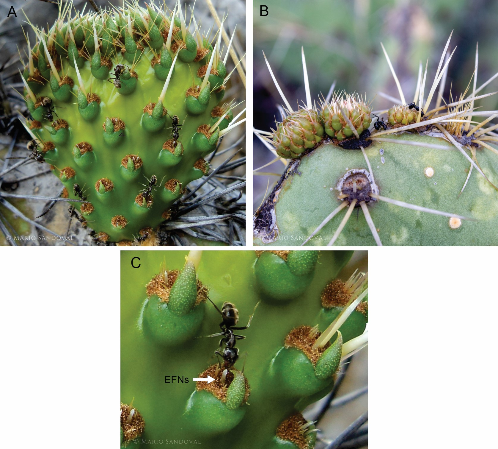

El sexo de la planta modifica el resultado de las interacciones hormiga-planta en O. robusta-un cactus mirmecófito facultativo.
Las plantas han desarrollado diferentes mecanismos para defenderse de los insectos herbívoros, tales como la producción de nectarios extraflorales (NEF). A cambio del néctar extrafloral, las hormigas disuaden a los herbívoros de las plantas, disminuyendo así el daño ejercido por ellos y aumentando el rendimiento de la planta en términos de crecimiento y supervivencia. Opuntia robusta, mejor conocida nopal tapón, es una especie de cactus endémica del centro y norte de México.
 Las plantas de diferentes sexos pueden exhibir diferencias en la inversión de recursos para la defensa, en este caso mediada por NEF, disminuyendo así diferencialmente la cantidad de recursos disponibles para otros procesos fisiológicos. En este contexto, se sabe poco sobre las diferencias relacionadas con el sexo en el resultado de las interacciones hormiga-planta en plantas que tienen nectarios extraflorales. En este estudio, planteamos la hipótesis de que las diferencias en la inversión de recursos para la defensa entre sexos cambian el resultado de las interacciones entre hormigas y plantas.
Realizamos experimentos de exclusión de hormigas en el campo para probar las diferencias relacionadas con el sexo en el resultado de las interacciones entre hormigas y plantas, en brotes vegetativos y reproductivos de Opuntia robusta, en individuos de diferentes sexos en dos poblaciones: trioica y dioica. Aplicamos una resina pegajosa (tanglefoot) a algunas ramas, evitando que las hormigas visitaran los NEF. Se permitió el acceso de hormigas a otras ramas. Luego medimos la herbivoría, las tasas de crecimiento relativas y las probabilidades de supervivencia de los brotes durante la temporada de crecimiento. Contamos el número de hormigas que se alimentaban en NEF de flores y cladodios de diferentes sexos.
Descubrimos que las diferencias en la inversión en recursos de defensa relacionadas con el sexo afectaron el resultado de las interacciones hormiga-planta, lo que influyó en los cambios en el número de hormigas que buscaban alimento en los NEF y en la herbivoría, el crecimiento y la supervivencia de flores y cladodios entre los diferentes sexos y entre las poblaciones. Nuestros resultados sugieren que el mantenimiento de NEF en O. robusta es costoso para las plantas. Los brotes visitados por hormigas tendían a crecer lentamente y sobrevivir peor en la población trioica; en la población dioica crecieron más lentamente pero sobrevivieron mejor. En general, un mayor número de hormigas que visitaban los NEF se relacionó con menor daño por herbívoros, mayor crecimiento y supervivencia de flores y cladodios. Nuestro estudio subraya la importancia de considerar el sexo de la planta en el resultado de las interacciones hormiga-planta.
Publicación completa en: